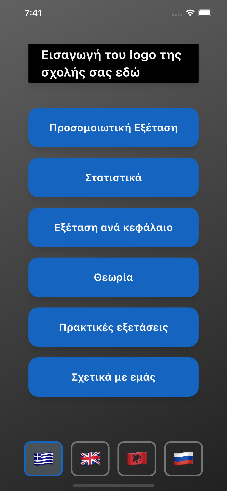
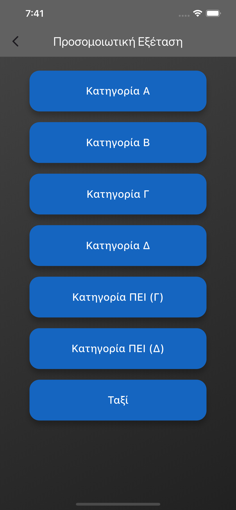
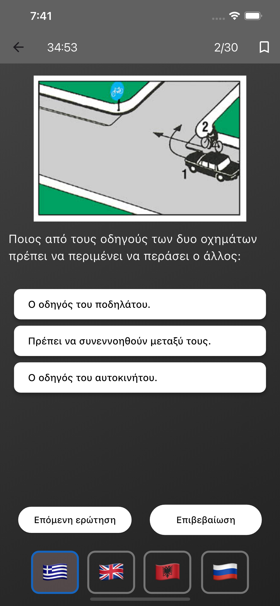
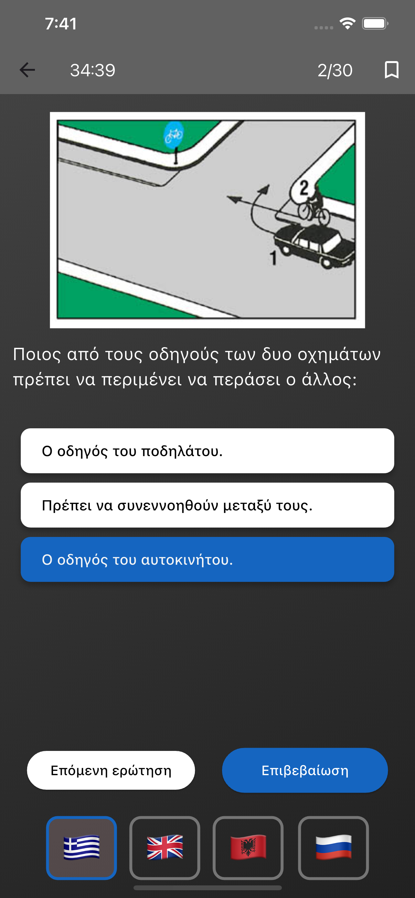
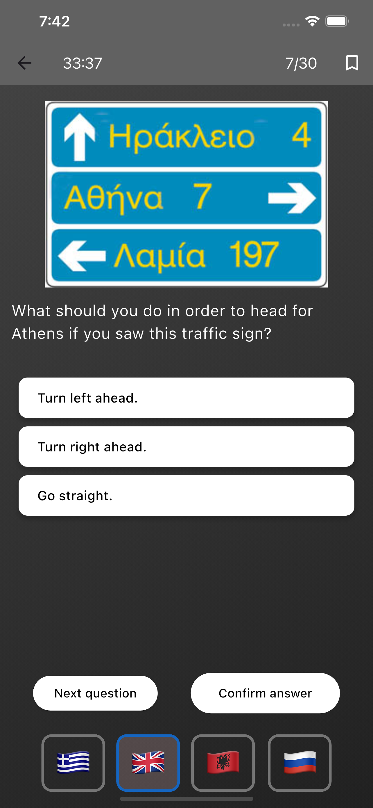
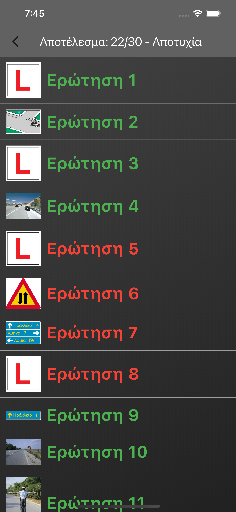
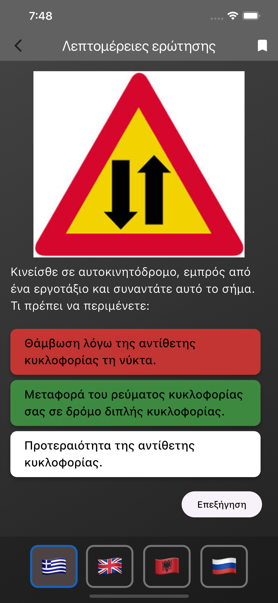
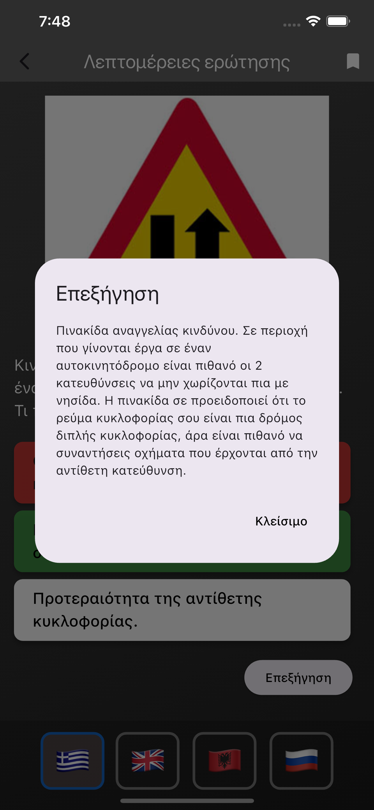
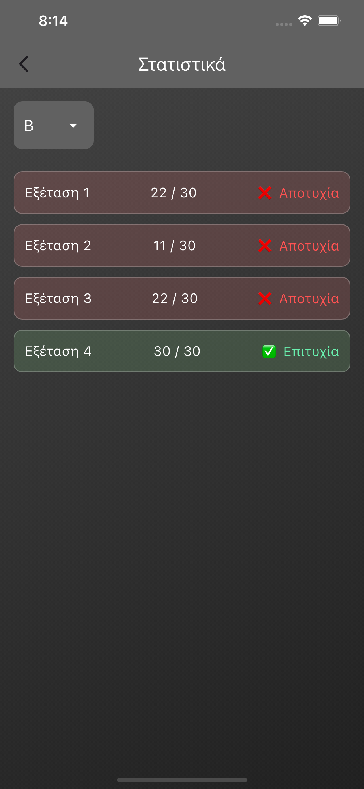

Εφαρμογή Σχολής Οδηγών
Είμαι ο δημιουργός αυτής της εφαρμογής που έχει σχεδιαστεί ειδικά για σχολές οδηγών.
Η πλατφόρμα αυτή έχει ήδη χρησιμοποιηθεί επιτυχώς από δύο αναγνωρισμένες σχολές οδηγών:
"Σχολή Οδηγών Κιντής Παναγιώτης" και
"Σχολές Οδηγών Παπαγιαννίδης".
Ακολουθεί μια σύντομη παρουσίαση των βασικών χαρακτηριστικών:
Κεντρικό Μενού Εφαρμογής
Το κεντρικό μενού προσφέρει εύκολη πρόσβαση σε όλες τις βασικές λειτουργίες:
Προσομοιωτική εξέταση, στατιστικά προόδου, εξέταση ανά κεφάλαιο, θεωρία,
πρακτικές εξετάσεις και προσωποποιημένες ρυθμίσεις. Η εφαρμογή υποστηρίζει
πολλαπλές γλώσσες για μεγαλύτερη προσβασιμότητα.

Κατηγορίες Διπλώματος
Οι χρήστες μπορούν να επιλέξουν την κατηγορία διπλώματος που τους ενδιαφέρει
(Α, Β, Γ, Δ, ΠΕΙ). Κάθε κατηγορία περιλαμβάνει εξειδικευμένες ερωτήσεις και
υλικό που αντιστοιχεί στις απαιτήσεις του συγκεκριμένου τύπου διπλώματος.

Διαδραστικές Ερωτήσεις
Οι ερωτήσεις παρουσιάζονται με σαφή διαγράμματα και εικόνες που προσομοιώνουν
πραγματικές καταστάσεις στον δρόμο. Οι μαθητές μπορούν να επιλέξουν την
απάντησή τους και να λάβουν άμεση ανατροφοδότηση.

Πίνακες Κίνησης και Σήματα
Η εφαρμογή περιλαμβάνει ερωτήσεις για πινακίδες κίνησης και σήματα δρόμου
με πραγματικές εικόνες. Οι χρήστες εξοικειώνονται με τη σημασία κάθε
πινακίδας μέσω διαδραστικών ασκήσεων.

Επιλογή Σωστής Απάντησης
Κάθε ερώτηση προσφέρει πολλαπλές επιλογές απαντήσεων. Η διαδικασία
είναι φιλική προς τον χρήστη, με σαφή κουμπιά "Επόμενη ερώτηση"
και "Επιβεβαίωση απάντησης".

Αποτελέσματα και Ανάλυση
Μετά την ολοκλήρωση κάθε εξέτασης, οι χρήστες λαμβάνουν αναλυτικά
αποτελέσματα που δείχνουν την επίδοσή τους ανά ερώτηση. Οι λάθος
απαντήσεις εμφανίζονται με κόκκινο χρώμα για εύκολη αναγνώριση.

Λεπτομερείς Επεξηγήσεις
Για κάθε λάθος απάντηση, η εφαρμογή παρέχει αναλυτικές επεξηγήσεις
που βοηθούν τους μαθητές να κατανοήσουν τους κανόνες κυκλοφορίας
και να αποφύγουν παρόμοια λάθη στο μέλλον.

Στατιστικά Προόδου
Το σύστημα καταγράφει την πρόοδο κάθε χρήστη, παρουσιάζοντας
στατιστικά ανά εξέταση. Οι μαθητές μπορούν να παρακολουθούν
την εξέλιξή τους και να εστιάσουν σε περιοχές που χρειάζονται βελτίωση.

Αναζήτηση Χρήστη
Οι εκπαιδευτές μπορούν να αναζητήσουν συγκεκριμένους χρήστες
και να παρακολουθήσουν την επίδοσή τους. Αυτή η λειτουργία
είναι ιδιαίτερα χρήσιμη για τη διαχείριση μεγάλων τάξεων.

Γιατί να Επιλέξετε την Εφαρμογή μας;
Η εφαρμογή έχει σχεδιαστεί με γνώμονα την εκπαιδευτική αποτελεσματικότητα και
την ευκολία χρήσης. Προσφέρει ολοκληρωμένη λύση για σχολές οδηγών που θέλουν να
εκσυγχρονίσουν τη διδασκαλία τους και να προσφέρουν στους μαθητές τους τα καλύτερα
εργαλεία προετοιμασίας.
Για περισσότερες πληροφορίες ή επίδειξη της εφαρμογής, μη διστάσετε να επικοινωνήσετε
εδώ!
Επισκέπτες: Φορτώνεται...